Ongli ixtisoslashuv
Butun e'tiborimiz kimyo obyektlarida: material tanlash, futerovka, nerjaveyka payvandlash va agressiv muhitdan himoya bo'yicha tayyorgarlik ko'rdik.
O'zbekiston · Samarqand · 2016-yildan beri
Reaktor va kolonnalar, kislotaga chidamli quvur tizimlari, rezervuar montaji va futerovka, argon payvandlash, kimyoviy chidamli qoplamalar va izolyatsiya — kimyo zavodi uchun kerak bo'lgan hamma ish bitta pudratchida.
01 — Biz haqimizda
«Pakhtachi Stone Group» — sanoat obyektlarida qurilish-montaj ishlarini bajaruvchi pudrat tashkiloti. Metallokonstruksiya montaji, payvandlash, quvur tizimlari, rezervuar va uskuna montaji, antikorroziy himoya, izolyatsiya va lesa ishlari — bularning barchasi bizning kundalik ishimiz.
Bugun biz kuchimizni ongli ravishda kimyo sanoati obyektlariga yo'naltirmoqdamiz. Sababi oddiy: kimyo zavodi talab qiladigan ishlar — aynan biz bajaradigan ishlar, faqat ular yuqori talablar va agressiv muhit sharoitida bajariladi. Shu yo'nalish bo'yicha jamoamizni tayyorlayapmiz, material va texnologiya bazasini shakllantiryapmiz.
Texnik izolyatsiya sohasida esa kompaniya sanoat qurilmalari uchun issiqlik, sovuq, tovush va yong'in himoyasidan tortib gaz turbinalari uchun maxsus izolyatsiyagacha bo'lgan barcha xizmatlarni taklif etadi. Yevropa va MDH davlatlaridagi hamkorlar bilan ishlaymiz.
Tamoyilimiz: obyekt vaqtida, loyiha bo'yicha va xavfsiz topshirilishi kerak.
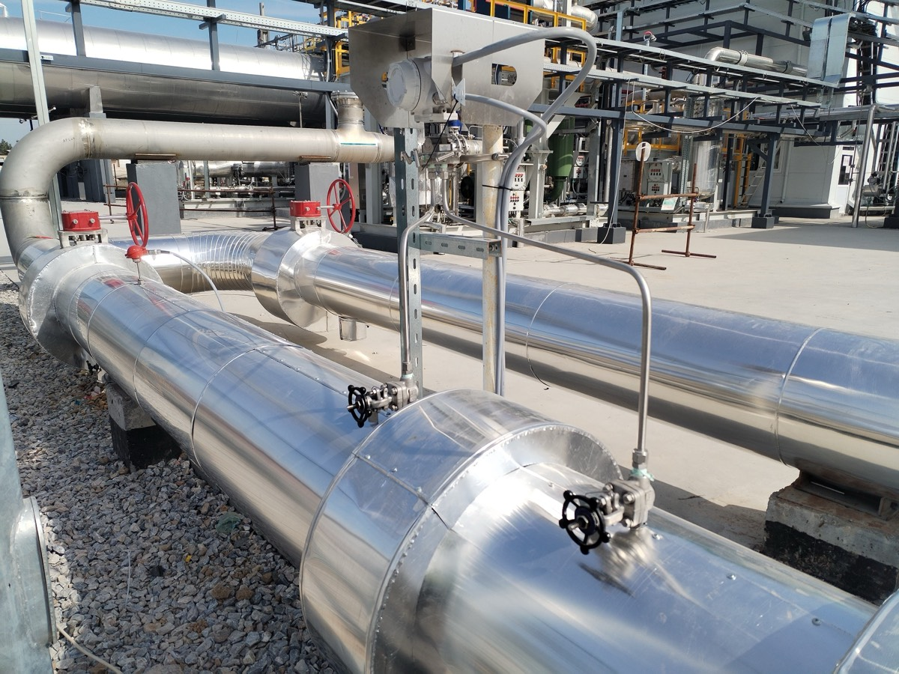
02 — Xizmatlar
Kimyo zavodida quvur tizimi eng zaif nuqta: materiali noto'g'ri tanlangan bitta uchastka butun liniyani to'xtatadi. Biz quvurni muhitga, haroratga va konsentratsiyaga qarab tanlaymiz.
Reaktor, kolonna, issiqlik almashtirgich — kimyo zavodining yuragi. O'rnatish aniqligi millimetrlarda o'lchanadi, ko'tarish sxemasi oldindan ishlab chiqiladi va tasdiqlanadi.
Kislota, ishqor va reagent saqlash sig'imi — bosim, agressiv muhit va ekologik xavf birlashgan obyekt. Payvand choki ham, ichki qoplama ham bir xil darajada muhim.
Kimyo zavodida metall karkas doimo agressiv atmosferada ishlaydi. Konstruksiyani nafaqat mustahkam, balki C5/CX darajada himoyalangan holda topshiramiz.
Mas'uliyatli liniyalarda ildiz chokini argonda, to'ldirishni elektrod yoki yarim avtomat bilan bajaramiz — chok ichkaridan silliq chiqadi, oqim buzilmaydi.
Har bir mas'uliyatli chok raqamlanadi va payvandchiga biriktiriladi, VIK o'tkaziladi, talab bo'lsa — buzmaydigan nazorat (RK/UZK).
Bo'yoq va futerovkaning 80% muvaffaqiyati — bu tozalash. Agressiv muhit har qanday zaif adgeziyani bir necha oyda ochib tashlaydi.
Kimyo zavodi atmosferasi ISO 12944 bo'yicha odatda C5-I yoki CX kategoriyaga kiradi — eng og'ir sharoit. Bu yerda oddiy emal ishlamaydi.
Energiya tejash, texnologik rejim, xodimlarni himoya qilish — va metallni izolyatsiya ostidagi korroziyadan (CUI) saqlash. Turbina izolyatsiyasi bo'yicha alohida tajribamiz bor.
Sanoat, maxsus va fasad lesalarining to'liq turlarini taklif qilamiz — alohida obyektlar, yirik loyihalar va uzoq muddatli shartnomalar uchun.
Yuqori konsentratsiya, harorat va mexanik yuk bo'lgan joyda plitka-g'isht futerovkasi eng ishonchli yechim — u o'nlab yillar xizmat qiladi. Devorlarga ham, eng og'ir sharoitdagi tag qismiga ham teramiz.
03 — Qurilish bosqichlari
Obyektni ko'rish, muhitlar ro'yxatini o'rganish, materiallarni moslab tanlash, smeta va grafik.
Fundament va ankerlar, kislotaga chidamli poddonlar, drenaj va oqava tizimi.
Kolonna va ferma montaji, quvur estakadalari, etajerka va maydonchalar.
Reaktor, kolonna, issiqlik almashtirgich, nasos va kompressorlar. Aniq sentrovka.
Har bir muhit uchun o'z liniyasi. Armatura, kompensator, sinov va markirovka.
Futerovka, antikorroziy tizim, issiqlik va sovuq izolyatsiyasi, CUI himoyasi.
Gidravlik va pnevmatik sinov, yuvish, bo'sh yurishda sinash, ijro hujjatlari.
04 — Yo'nalishlar
05 — Nima uchun aynan biz
Butun e'tiborimiz kimyo obyektlarida: material tanlash, futerovka, nerjaveyka payvandlash va agressiv muhitdan himoya bo'yicha tayyorgarlik ko'rdik.
Quvur bir firmada, futerovka boshqasida bo'lsa — muddat buziladi. Bizda hammasi bitta shartnoma va bitta javobgarlik ostida.
Konsentratsiya, harorat va rejimni so'raymiz, keyin tizimni taklif qilamiz. Kerak bo'lsa arzonroq, lekin ishlaydigan alternativani ko'rsatamiz.
Ishlab chiqarishni to'xtatmasdan, smenali va tungi rejimda ishlaymiz. To'xtatish remonti uchun brigada va grafikni oldindan rejalashtiramiz.
Tozalash darajasi, qoplama qalinligi, chok nazorati, gidrosinov — hammasi akt va protokol bilan. Ijro hujjatlarini to'liq topshiramiz.
Gaz analizatori, iskra chiqmaydigan asbob, maxsus kiyim. Obyektda buyurtmachining rejimi so'zsiz bajariladi.
06 — Obyektlar
Kimyo obyektlari bo'yicha portfolio shakllantirilmoqda — sizni qiziqtirgan ish turi bo'yicha loyihalarimiz fotosi va hajmlarini so'rov bo'yicha yuboramiz.
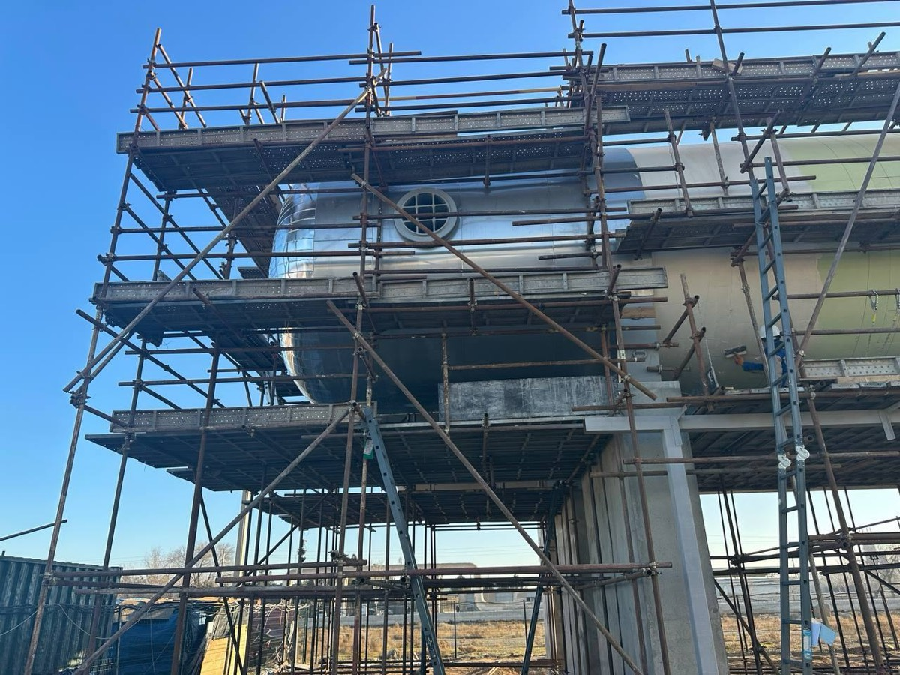
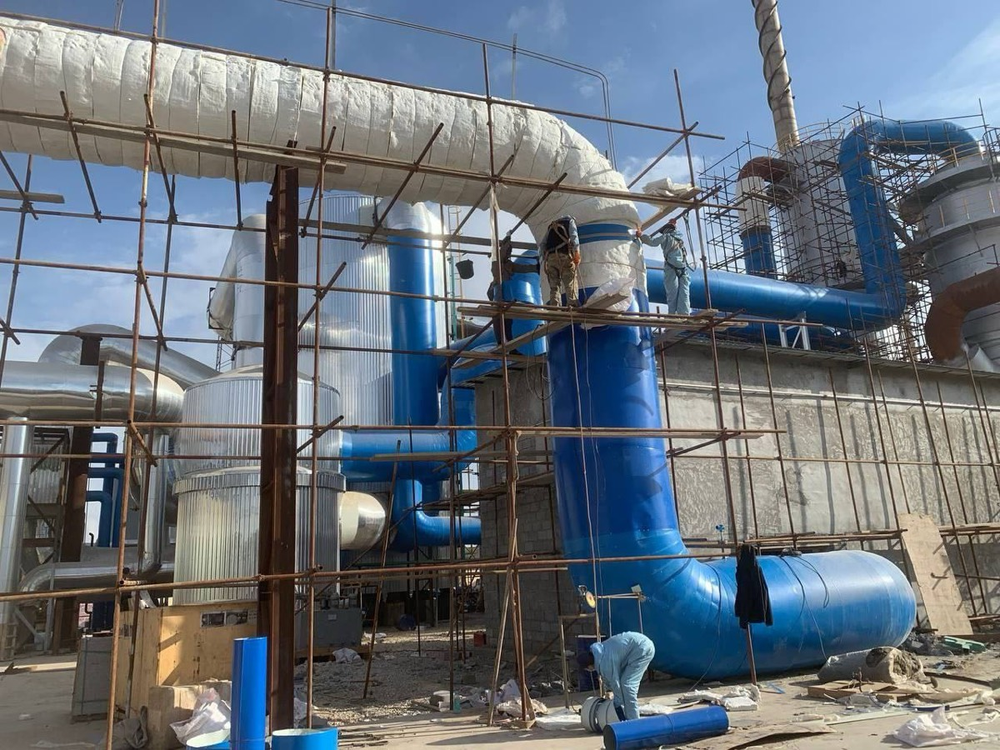
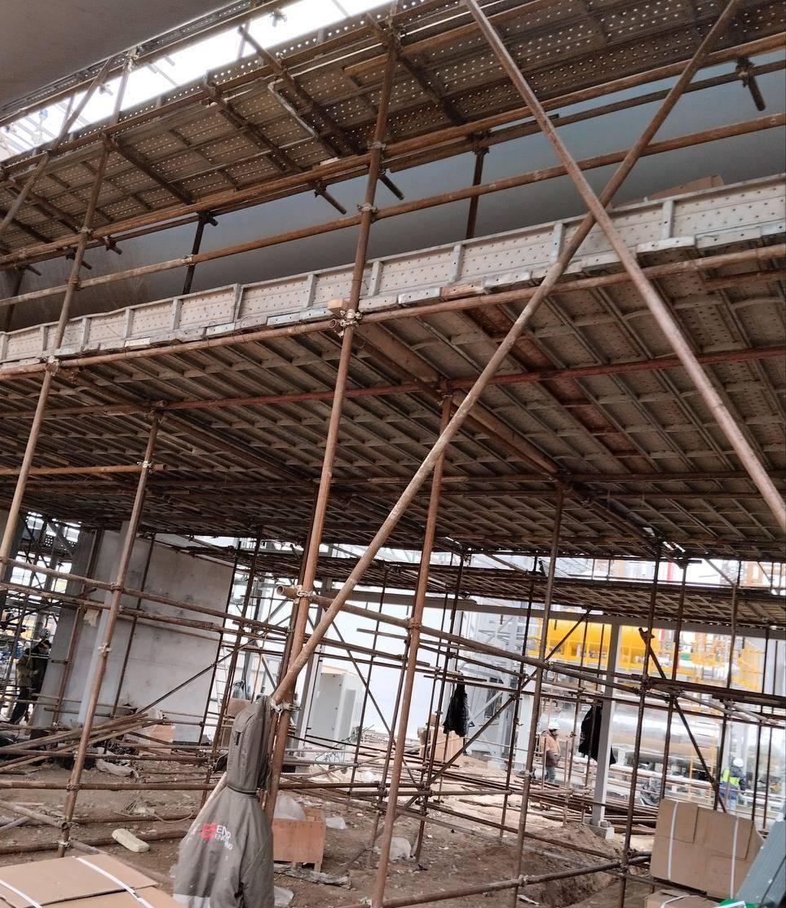
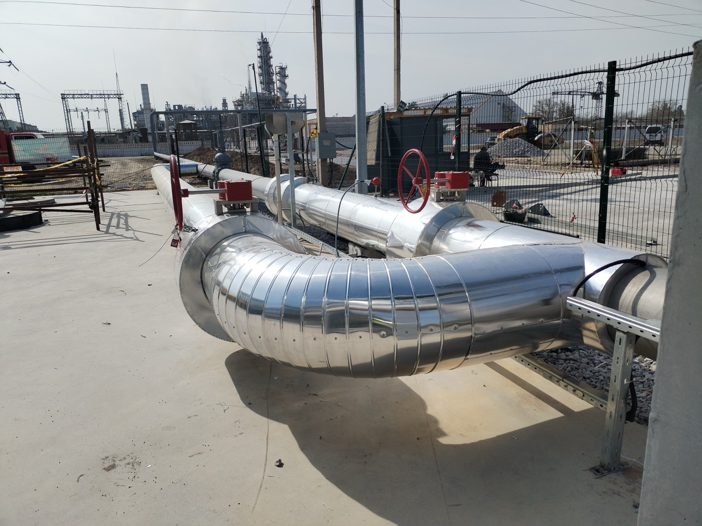
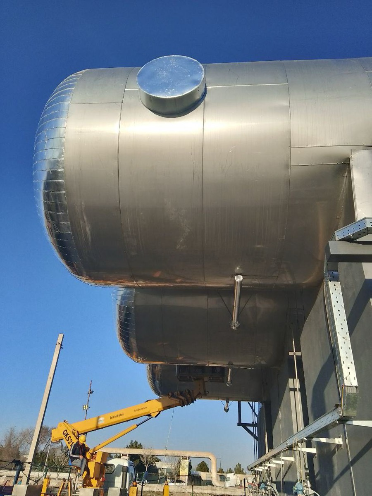
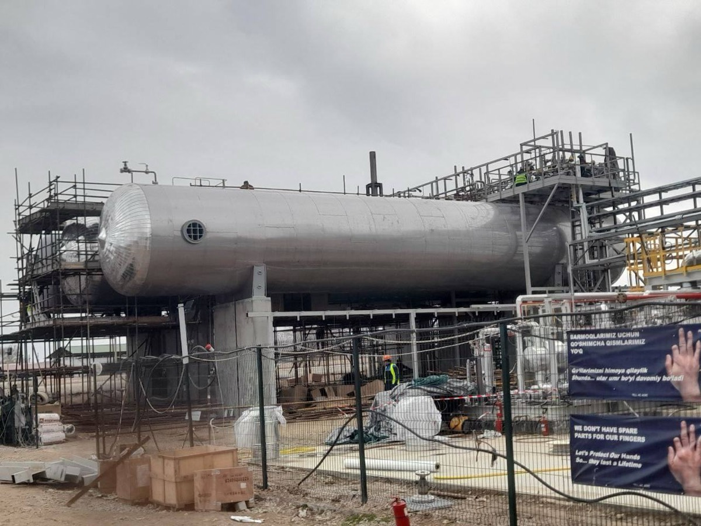
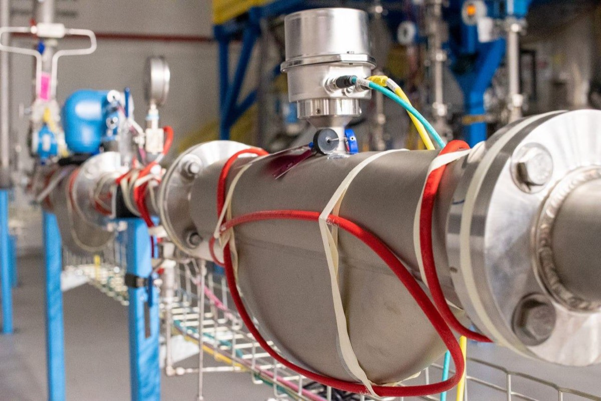
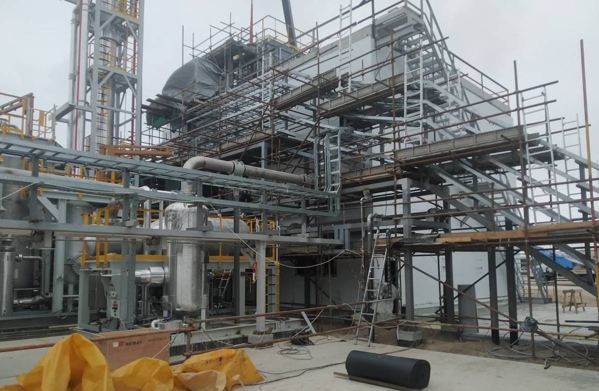
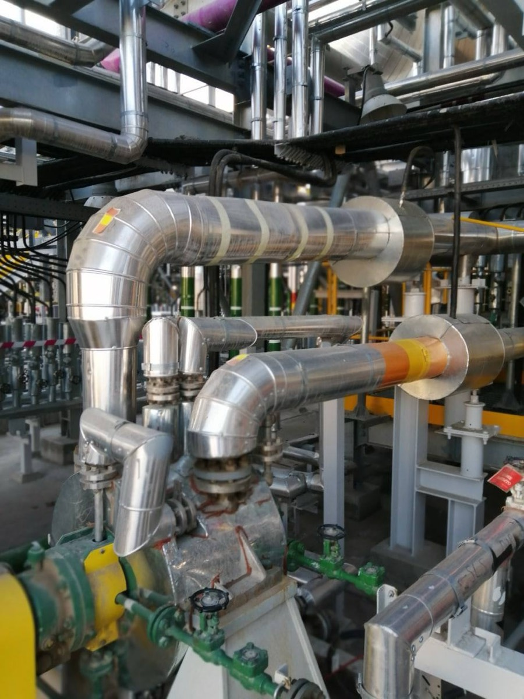
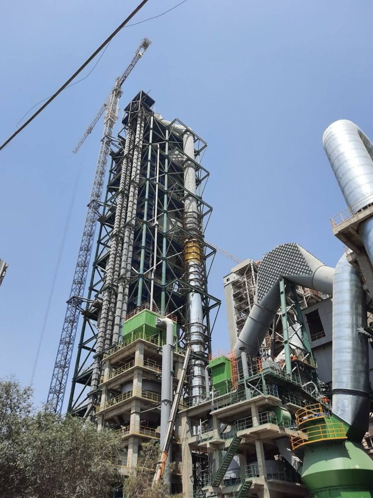
07 — Ish jarayoni
1 ish kuni ichida bog'lanamiz. Mutaxassis obyektga chiqib, hajmlarni o'lchaydi va muhitlar bo'yicha ma'lumot to'playdi.
Material va qoplama tizimini muhitga moslab tanlaymiz. Hajmlar vedomosti, spetsifikatsiya va grafik — odatda 2–5 ish kuni.
Muddat, narx, kafolat va topshirish tartibi aniq yoziladi. Brigada va materiallar obyektga chiqadi.
Bosqichma-bosqich fotoreport, sinovlar, aktlar va ijro hujjatlari. Kafolat: 12–36 oy.
08 — Xavfsizlik va sifat
09 — Savol-javob
Ochiq javob beramiz: tajribamiz sanoat qurilish-montaj ishlarida to'plangan — metallokonstruksiya, payvandlash, quvur tizimlari, rezervuar montaji, izolyatsiya. Aynan shu ishlar kimyo zavodida ham bajariladi, faqat yuqoriroq talablar bilan. Birinchi kimyo loyihalarida kuchaytirilgan texnik nazorat bilan yoki tor yo'nalish bo'yicha subpudratchi sifatida ishlashga tayyormiz — natija uchun bu eng to'g'ri format.
Ha. Ishlayotgan korxonalarda, ishlab chiqarishni to'xtatmasdan, smenali va tungi rejimda ishlash tajribamiz bor. To'xtatish remonti uchun brigada va grafikni oldindan rejalashtiramiz.
Oltingugurt, azot va fosfor kislotasi, ishqor, ammiak, o'g'it eritmalari, organik erituvchilar. Muhit, konsentratsiya va haroratni aytsangiz — mos material, futerovka va qoplama tizimini hisoblab taklif qilamiz.
Albatta. Ko'p mijozlar bitta yo'nalishdan boshlaydi — masalan, faqat futerovka yoki faqat izolyatsiya — keyin qolgan ishlarni ham bizga topshiradi.
Ha, faqat naryad-dopusk tizimi bo'yicha: gaz analizatori bilan nazorat, iskra chiqmaydigan asbob, olovli ishlar uchun alohida ruxsat va yong'in posti.
Ikkala variant ham ishlaydi. Materialni o'zimiz yetkazib berganda odatda narx pastroq bo'ladi va javobgarlik bir joyda to'planadi.
Ha, O'zbekistonning barcha hududlarida ishlaymiz. Jamoa vaxta usulida chiqadi, texnika obyektga yetkaziladi.
Ish turiga qarab 12–36 oy kafolat. Hujjatlar: aktlar, sinov protokollari, qoplama qalinligi o'lchovlari, ijro sxemalari, material sertifikatlari.
10 — Aloqa
Chizmani yoki obyekt tavsifini yuboring — muhit va sharoitni hisobga olgan holda 2 ish kuni ichida taklif tayyorlaymiz. Ko'rik bepul.